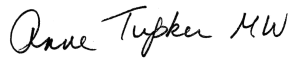

My work involves tasting thousands of wines each year. Bouquet Wines allows me to share my personal selection with you.
I’m Anne Tupker, member of the Institute of Masters of Wine, winner of the Mme Bollinger and the Sainsbury Prizes, and occasional judge for the International Wine Challenge and Decanter World Wine Awards.
Download my current list: it features stunning new discoveries from recent travels and tastings as well as exciting new vintages of many old favourites. For delicious, good-value wines, hand-picked by a Master of Wine, look no further.
I hold a number of tastings of wines from this list throughout the year, as well as presenting tutored tastings and food & wine matching dinners. I also help with restaurant wine lists, organise tailor-made visits to wine regions, and track down particular wines for clients’ cellars.

ORDERING All prices are per case of 12 bottles, and there is a minimum order of one case. Delivery in the London area is free for orders of £350 or more. Smaller orders can be delivered at a cost of £15.50.
Email your order to sparkling@msn.com or send an order form to
Bouquet Wines
16 Holland Park Avenue
London W11 3QU
©2020 Anne Tupker - Split Template by One Page Love